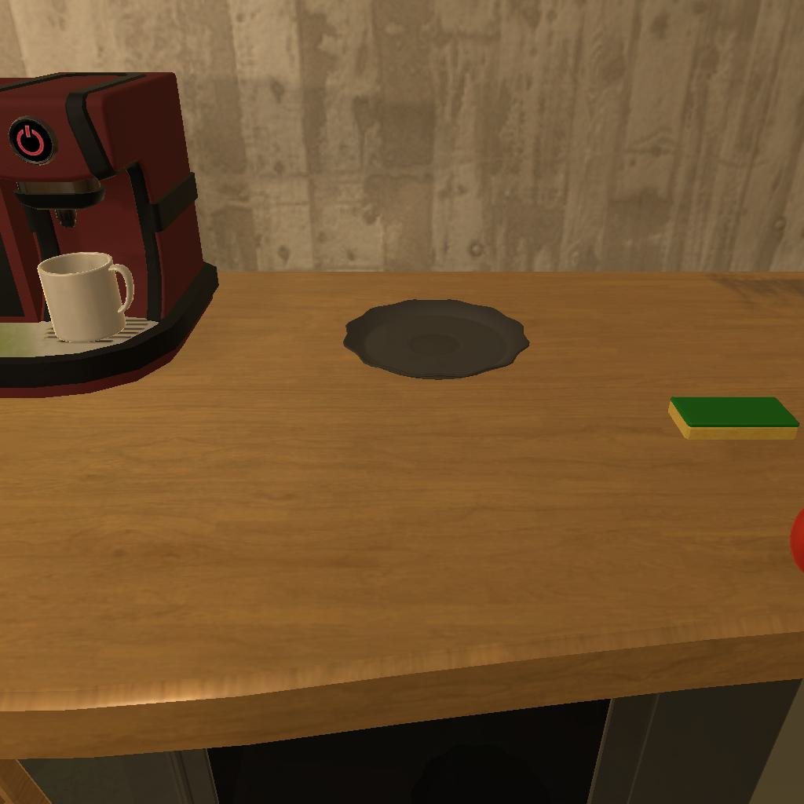

---------------------------------------------------------task: 26---------------------------------------------------------
--------------------------------------------------------------------------------------------------------------------------------------------------------------------
--------------------------------------------------------------------------------------------------------------------------------------------------------------------
Step:--------------------------------------------------------------------------3-------------------------------------------------------------------------------
----------------------------------------
VLM Prompt:
Image1:
Image2:
Image3:
**Instruction**
1. Analyze the provided images to identify all visible household objects and compare the difference between images (e.h. whether the object is opened or not and taken on hand or not), focusing on those relevant to the task description "find two kettle and put them in cabinet."
2. Use the analysis of images and the task hint "The agent must find an object of the desired type, pick it up, find the correct location to place it, put it down there, then look for another object of the desired type, pick it up, return to previous location, and put it down there with the other object." to answer the question: what is the most reasonable action in the choices for the task description "find two kettle and put them in cabinet"?
3. Decide and write the answer using the template: The answer is: (i): , where i is the real number. If there is no desired object in images, search every place based on **Initial Observation** to find the object. And if no one is exactly correct, choose a similar answer.
**Initial Observation**
You are in the middle of a room. Looking quickly around you, you can see countertop (1), coffeemachine (1), cabinet (1-4), drawer (1-8), sink (1), sinkbasin (1), garbagecan (1), fridge (1), microwave (1), dresser (1), sidetable (1)
**Answer Choices**
(1): go to countertop 1
(2): go to coffeemachine 1
(3): go to drawer 1
(4): go to sink 1
(5): go to sinkbasin 1
(6): go to cabinet 3
(7): go to garbagecan 1
(8): go to cabinet 4
(9): go to drawer 2
(10): go to fridge 1
(11): go to microwave 1
(12): go to dresser 1
(13): go to sidetable 1
(14): go to drawer 3
(15): go to drawer 4
(16): go to drawer 5
(17): go to drawer 6
(18): go to drawer 7
(19): go to drawer 8
(20): open cabinet 2
(21): close cabinet 2
(22): examine cabinet 2
**Answer**
Let's think step by step by following the instructions.
----------------------------------------
----------------------------------------
Original Response:
First, we analyze the provided images to identify all visible household objects. In Image1 and Image2, we can see a countertop, a coffee machine with a cup, and what seems to be a sponge or cloth on the countertop. In Image3, we can see a sink, a knife, a pot, a plant, and some food items on the countertop. There are no visible kettles in any of the images.
Next, we use the task hint to determine the most reasonable action for the task description "find two kettle and put them in cabinet." The task hint suggests finding an object of the desired type, which in this case is a kettle. Since there are no kettles visible on the countertops or near the coffee machine, the next logical step would be to search in areas where a kettle might be stored, such as cabinets or drawers.
Based on the **Initial Observation**, we have several cabinets and drawers that could be checked. However, since we are specifically instructed to "put them in cabinet," it is more likely that the kettles are stored in one of the cabinets rather than the drawers.
Among the answer choices, (6): go to cabinet 3, (8): go to cabinet 4, and (20): open cabinet 2 are the most relevant actions. Since we have already seen the inside of cabinet 2 in Image3 and there is no kettle there, we can eliminate (20): open cabinet 2 and (21): close cabinet 2 from our options. Similarly, (22): examine cabinet 2 is not useful since we have already seen inside it.
Between (6): go to cabinet 3 and (8): go to cabinet 4, either could be correct, but we do not have information on which cabinet is more likely to contain the kettles. Therefore, we must search based on the **Initial Observation**.
The answer is: (6): go to cabinet 3 or (8): go to cabinet 4. Since we have to pick one, we'll go with the lower number.
The answer is: (6): go to cabinet 3.
----------------------------------------
----------------------------------------
>>> Refine Original VLM Response and Get Pure Action: go to cabinet 3 or (8): go to cabinet 4
----------------------------------------
-----------------------------------------------------------------
Running time: 15.507519483566284 seconds
Total Money: 16.16692
-----------------------------------------------------------------
-----------------------------------------------------------------
Text Observation:Nothing happens.
-----------------------------------------------------------------
UNSUCCEED